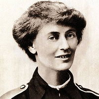

Loading data...Please do not scroll yet!
Scroll to begin!
Let's start by introducing the visualisation. Each grey bar represents one parliamentary term.
For example, this bar represents the first New Labour government under Tony Blair.
Okay, now let's draw a line for each woman MP's stay in parliament. For example, these are the lines for the longest-serving woman MP.
Dame Margaret Beckett left parliament for a few years so she gets two separate lines.
Here are all the other women MPs! Many different women from across the political spectrum have served over the past century.
Lines are coloured according to the party the MP belongs to.
Let's dive in and look at a few prominent ones.
Constance Markievicz: first woman to become an MP

Sinn Féin
1918 → 1922
Dublin, St Patrick's
In December 1918, Countess Constance Markievicz became the first woman elected to the House of Commons. However, she was a member of Sinn Féin and due to a party policy of abstentionism, she did not actually take her seat. A socialite-turned-revolutionary, she spent her life campaigning on behalf of working people, fought in the Easter Rising against the British, and got herself elected to the first Irish Dáil (parliament) while serving a jail sentence.

Nancy Astor: first woman to take her seat
Conservative Party
1919 → 1945
Plymouth, Sutton
The first woman to take her seat was MP Viscountess Nancy Astor, in 1919. Despite her 26 year tenure in parliament being met with sexism and derision from other MPs, she campaigned for lowering the voting age of women to 21, better pensions for widows, employment rights, the expansion of nursery schools, and for better representation of women in the civil sector. She arrived in the House of Commons as the only female MP and left in 1945 as a record 24 women were elected.

Margaret Thatcher: first woman prime minister

Conservative Party
1959 → 1992
Finchley
In 1961, Baroness Margaret Thatcher was elected as the MP of Finchley in North London, and led the Conservative Party to landslide victory in 1979 in one of the most important political upheavals in British history.
By breaking through the ultimate glass ceiling in British politics, Thatcher was an important role model and inspired many women to enter politics. Her overall contribution to women’s participation in politics is less certain. In her 11 years as Prime Minister, she promoted only one woman to her cabinet and did not champion any feminist causes. It took another 26 years (and four male PMs) until another woman - Theresa May - lead the UK government.
Over the past 100 years, we've seen clear progress. Since 1918, parliament has been graced by the presence of 488 women, many of whom have made significant contributions to democracy in the UK (more on this later!). There are currently 208 women in the House of Commons. Hover/tap on the lines and toggle the zoom slider to zoom in and explore.
When you're ready to continue, scroll down.The 1997 Labour Landslide
The 1997 election saw a doubling in the number of women MPs, with 80 newly elected. Of these, 70 were Labour.
We’ve highlighted all the new Labour women MPs elected in 1997. Hover/tap on them to discover who they are!
All Women Shortlists
Half of these new Labour women MPs had been selected through All Women Shortlists (AWS, for short).
The controversial decision to use AWS (a process in which only women are allowed to stand for candidate selection in certain seats) faced opposition on the grounds it was discriminatory. Legal challenges were later nullified by legislation passed in parliament.
While the merits and pitfalls of AWS are still being debated, there is no doubt that they have helped improve the representation of women in parliament.
Let's now look at how close we are to a 50:50 Parliament.
208 women MPs is significant, but we still haven't hit 50:50 yet. In fact, for every woman in the House of Commons today, there are twice as many men. Hover/tap on the graph to see each parliament's ratio of men to women.
The situation for women is also very party dependent. In 2018, 45% of Labour's MPs are women. Thanks in part to all women shortlists, there are currently more female Labour MPs than all the other parties combined (and at a time when the Labour Party is in opposition).
But only 21% of Conservative MPs are currently women. This presents a problem, because a Conservative landslide election could cause a significant step backwards in our progress towards a 50:50 parliament.
For smaller parties such as the Liberal Democrats and the Scottish National Party, women make up about a third of their ranks.
Overall, 32% of MPs in the UK are women. How does this compare to other developed countries? Let's take a look!
Right! On this graph, we see the % of women elected to the equivalent of the House of Commons in other developed countries. For Norway, this is the Stortinget, for Mexico, Cámara de Diputados, for the United States, it is the House of Representatives.
As usual, the Nordic countries lead the pack. Mexico has also made great strides and is progressing much quicker than the UK despite the fact that both countries started at the same point in 2002.
In fact, the UK is a rather middle of the road performer. You may also note that none of these countries have made it to equal gender representation yet. In fact, the only two countries in the world to meet this threshold are Bolivia and Rwanda.
At this point, you may be thinking - great, I've seen how much progress we've made. I've been introduced to a few prominent MPs. And I know how much further we have to go. But why? What does a 50:50 parliament give us that we don't have already?
Here's what we can do to answer this question:
- Gather a bunch of speeches made by MPs.
- Make a machine learning model that can identify the topics within a speech automatically because we're lazy.
- Tally up all the times an MP spoke about a particular topic.
- Compare the difference in time spent by each gender.
- Identify which topics have a bias towards one gender or another.
We scraped and cleaned 1Cleaning the text is a common step in natural language processing. It involves removing all words that convey no meaning or that might be misleading, converting words to their root form (eg. learning, learnt → learn) and combining words that appear together often into a single word (eg. “nuclear power” → “nuclear_power”) a corpus of 1.2 million speeches delivered by men and women who have served in the House of Commons since 1970. This included long monologues, debates, single sentence replies and acknowledgements.
We then used a probabilistic machine learning model called Latent Dirichlet Allocation (LDA) to help us infer the topics within a speech. 2While there are a number of different machine learning techniques that can do this, including neural networks, the beauty of LDA is that it is an unsupervised learning algorithm - ie. unlike most other algorithms, it does not require a bunch of pre-labelled speeches to train it. This was important to us because we didn't want to bias the inference process by selecting the topics in advance. The only necessary inputs are the corpus of speeches and a rough guess of the total number of topics within the corpus. LDA then iteratively tries to identify this number of topics by looking for words that often appear together and clustering them into the same topic. 3For example, if we choose a small number of topics - let's say 10 - it will simply identify the 10 most overarching themes in parliamentary speeches. Since we wanted to identify more subtle topics and themes, after a bit of experimentation, we settled on 100. As is often the case with LDA models, many of the topics identified were nonsensical, but the majority were well-defined.
After leaving the model to compute for a few hours, it returned with a bunch of topics such as the NHS & social care, energy policy, armed forces, education, and so on.
4Of course, LDA doesn't output these names. It simply gives us a list of words and phrases that are most closely associated with a particular topic and it is up to us to name the topic.
Let's say we had two topics:
We label Topic 1 as “nhs” and Topic 2 as “education”.
Let's say we had two topics:
| Topic 1 | Topic 2 |
|---|---|
| nhs | school |
| hospital | education |
| patient | student |
| health | university |
| care | teacher |
| health service | college |
| doctor | pupil |
| social care | young people |
We then ran the model on each of the 1.2 million speeches to identify the topics within them. Due to the inherent uncertainty in probabilistic modelling, there will be some misidentification5For example, if we input the sentence “Wind and solar power are renewable energy sources while natural gas is a fossil fuel.”, the model tells us that is 84% about the “energy policy” topic whereas “There is a lot of natural gas in the middle east.” is only 44% about “energy policy”. Speeches can also be composed of multiple topics. . However, these errors should not affect our analysis as longer speeches are labelled more accurately and also have a greater contribution to the final result.
We then tallied up the time spent by each MP on each topic and normalised it to give us a fractional time.
Okay, enough with the delays already! Let's look at the results. Scroll on!
Here’s the chart for the topic “Economy”. Each dot in this chart represents one MP, with men on the left and women on the right. The higher the dot, the greater the proportion of their time in parliament was spent talking about the economy.
Hover/tap on each dot to see who they are and their percentage. You can also use the search bar to find your own MP by either entering your constituency (eg. Brighton, Pavilion) or their name (Caroline Lucas).
Men and women appear to give the economy roughly equal weighting. Next let’s take a look at another topic, one which women tend to devote more parliamentary time to.
We can represent the difference between the median time spent by each gender with a line.
Women MPs clearly spend more of their time discussing welfare reforms than men.
What about a topic favoured by men?
This time, we see that men spend twice as much time talking about parliamentary terminology.
Let's take this median line and plot it with the median lines of all the other topics.
How to read this chart
A difference of +100% (eg. “education”) means that women spend twice as much time as men talking about the topic. A difference of -100% means that men spend twice as much time as women talking about the topic.
So female MPs spend more of their time than men time talking about welfare reforms, child care, the NHS and social care...
...and male MPs spend more of their time than women talking about the legislation, energy, the european union and the armed forces.
These disparitities exist even after accounting for party affiliation.
Tap on a line to take a closer look at a topic
The Future
On this final graph, we show the number of women from all parties who were selected as candidates for parliament. Many more women would have stood to represent their party but did not get selected by their local party.
Parliamentary candidates for the next general election are yet to be selected so it is still too early to tell if the next election will see an improvement in representation. Ultimately, what matters is not how many female candidates run, but rather where they run. Candidates elected to marginal seats are much more likely to be elected than those who run in safe seats which do not change party hands.
In the 2017 general election, only 38% of candidates in winnable seats were women1Winnable seats are defined as those with less than 5% vote share between the top two parties.. In order to achieve real progress however, this number will need to be much greater than 50% in order to overcome the huge gender imbalance in non-marginal seats which do not change hands often, and are thus mostly occupied by veteran male MPs.
Academic research overwhelmingly demonstrates that the lack of gender equality in parliament is a demand-side problem - that is, it is a problem of parties not selecting enough women rather than enough women not standing. This is particularly true of the Conservative party, which must try harder to select significantly more women candidates in marginal constituencies.